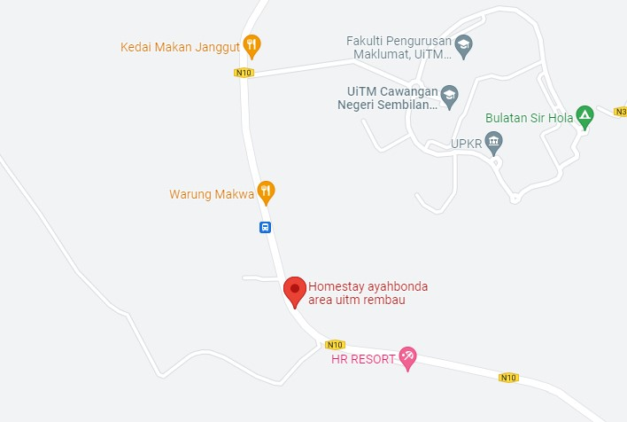

Hello, welcome to my website.
First of all, my name is Nurul Atiqah binti Muhamad. You can call me Tiqa.
I'm 20 years old and staying at Puchong, Selangor. I am the middle child in my family and was born on 28th June 2002. I have two oldest brothers and two younger sisters. If you want to know more about my family. You can check on my family page.
I currently studying at UITM Rembau in Diploma Information Management (IM110) and I rent a house for this semester with my friend at 'Homestay Ayahbonda'.

I would describe myself in three words, trustworthy, observant, and calm. They often tell me that I am a trustworthy person because whatever they tell me, regardless of their secrets or expression of feelings, I will not tell anyone else. That is why my friends often look for me to express something. They chose me to be their good listener. They also always ask for opinions about something and decided to follow it.
“When the trust is high, communication is easy, instant, and effective.”
- Stephen Covey
Next, observant. I quickly noticed something and liked to observe things around me. I used to notice the smallest details that people don’t notice, even something slightly different. This makes me more careful in using my words and choosing friends in my circle. I can also easily tell if someone is not in the mood to talk to me or is angry or upset about something.
“I’m not smart, but I like to observe. Millions saw the apple fall, but Newton was the one who asked why.”
- William Hazlitt
I found myself as a calm person since I have quite a lot of patience. I can tolerated with people who are a bit stubborn and quite annoying with patience. It may be because I have experienced dealing with my close acquaintance who always comes to me with the same problem for many years because they don't want to resolve it. In addition, I rarely get angry with some people. I like to remain calm whenever possible.
“Be like a duck. Calm on the surface, but always paddling like the dickens underneath.”
- Michael Cane